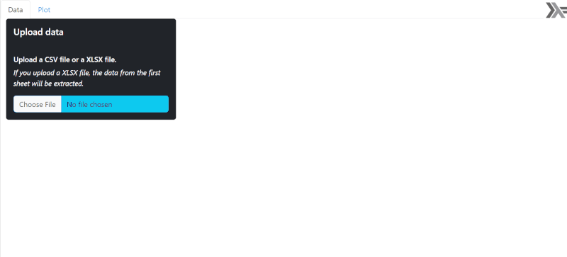

A R graphic in a Yesod app
Yesod is a web framework for Haskell. In this post I show how to do a Yesod application allowing to upload some data from a CSV or a XLSX file and to display a R graphic representing two selected columns of the data.

Below is the directory content of the application, available in this Github repository.
| .dir-locals.el
| client_session_key.aes
| package.yaml
| README.md
| routes.yesodroutes
| stack.yaml
|
+---app
| Main.hs
|
+---src
| Application.hs
| Foundation.hs
| GGplot.hs
| Home.hs
|
\---static
+---bootstrap-5.3.2
| +---css
| | bootstrap.min.css
| | bootstrap.min.css.map
| |
| \---js
| bootstrap.bundle.min.js
| bootstrap.bundle.min.js.map
|
+---DataTables-1.13.8
| | datatables.min.css
| | datatables.min.js
| |
| \---images
| sort_asc.png
| sort_asc_disabled.png
| sort_both.png
| sort_desc.png
| sort_desc_disabled.png
|
+---images
| haskell.png
|
+---jQuery
| jquery-3.7.1.min.js
|
+---PapaParse
| papaparse.min.js
|
+---R
| ggplotXY.R
|
\---SheetJS
xlsx.core.min.js
xlsx.core.min.mapI’m using bootstrap for the style, DataTables to display a nice table of the data, PapaParse to parse the uploaded CSV file to a JSON object, and SheetJS to convert the uploaded XLSX file to CSV data, which can then be parsed to a JSON object with PapaParse.
Hamlet is a HTML templating language developed for Yesod applications. Below is the Hamlet code of the application. I use a Bootstrap modal to display errors if there are.
<body>
$# BOOTSTRAP MODAL -----------------------------------------------------------
<div #myModal .modal .fade aria-hidden aria-labelledby=myModalLabel tabindex=-1>
<div .modal-dialog .modal-dialog-centered>
<div .modal-content>
<div .modal-header>
<h1 .modal-title .fs-5>
<div .modal-body>
<span #message>
<div .modal-footer>
<button type=button .btn .btn-secondary data-bs-dismiss=modal>Close
$# HASKELL LOGO --------------------------------------------------------------
<img src=./static/images/haskell.png style=float:right;margin:5px;width:50px;>
$# ---------------------------------------------------------------------------
<div .container-fluid>
$# TABS --------------------------------------------------------
<ul .nav .nav-tabs role=tablist>
<li .nav-item role=presentation>
<button #data-tab .nav-link .active data-bs-toggle=tab data-bs-target=#data-tab-pane type=button role=tab aria-controls=data-tab-pane aria-selected=true>Data
<li .nav-item role=presentation>
<button #plot-tab .nav-link data-bs-toggle=tab data-bs-target=#plot-tab-pane type=button role=tab aria-controls=plot-tab-pane aria-selected=false>Plot
$# TABS CONTENTS -----------------------------------------------------------
<div #tabContent .tab-content>
$# DATA TAB --------------------------------------------------------------
<div #data-tab-pane .tab-pane .fade .show .active role=tabpanel aria-labelledby=data-tab tabindex=0>
<div .row>
$# SIDEBAR -----------------------------------------------------------
<div .col-4>
<div .card .text-bg-dark tabindex=-1 aria-labelledby=sidebarDataTitle>
<div .card-body>
<h5 #sidebarDataTitle .card-title>Upload data
<h6 .card-text>Upload a CSV file or a XLSX file.
<p .card-text style=font-style:italic;>If you upload a XLSX file, the data from the first sheet will be extracted.
<input #file type=file .form-control .btn .btn-info>
$# TABLE -------------------------------------------------------------
<div .col-8>
<table #table .table-striped .table-bordered .table-hover>
<thead>
<tr role=row>
<tbody>
$# PLOT TAB --------------------------------------------------------------
<div #plot-tab-pane .tab-pane .fade role=tabpanel aria-labelledby=plot-tab tabindex=0>
<div .row>
$# SIDEBAR -----------------------------------------------------------
<div .col-4>
<div .sidebar .card .text-bg-dark tabindex=-1 aria-labelledby=sidebarPlotTitle>
<div .card-body>
<div .sidebar-header>
<h5 #sidebarPlotTitle .card-title>Plot
<div .sidebar-body>
<fieldset #selectXY style=display:none;>
<label for=selX>Select the <em>x</em> column
<select .form-control #selX style=overflow-y:auto;>
<br>
<label for=selY>Select the <em>y</em> column
<select .form-control #selY style=overflow-y:auto;>
$# SPINNER ---------------------------------------------------------
<div #spinner .spinner-border .m-5 role=status style=display:none>
<span .visually-hidden>Loading...
$# PLOT --------------------------------------------------------------
<div .col-8>
<img #plot width=100% height=400px>The interface has two tabs: one to upload and display the data, and the other one to select two columns and display the graphic.
The JavaScript function below will be called when the user uploads a file. The file can be either a CSV file or a XLSX file. If this is a XLSX file, then its content will be converted to CSV data before calling this function. This function firstly converts the CSV data to a JSON object, then it fills the table with the data and the x and y dropdown lists with the column names, and then it defines the behavior of the application.
function papaParse(csv) {
Papa.parse(csv, {
header: true,
skipEmptyLines: true,
dynamicTyping: true,
complete: function(results) {
if(results.errors.length != 0) {
alert("Something is wrong with this CSV file.");
console.log("Errors:", results.errors);
throw new Error("Something is wrong with this CSV file.");
}
let dataframe = results.data;
let colNames = results.meta.fields;
// Fill the table --------------------------------------------------------
let headers = "";
for(let colname of colNames) {
headers += "<th>" + colname + "</th>";
}
$("#table thead tr").append(headers);
let columns = [];
for(let colname of colNames) {
columns.push({ data: colname });
}
$("#table").DataTable({
data: results.data,
columns: columns
});
// the dataframe is an array of objects like:
// [{A: a1, B: b1, ...}, {A: a2, B: b2, ...}, ...]
// we transform it to this object:
// {A: [a1, a2, ...], B: [b1, b2, ...], ...}
let dfx = {}; // for x, we convert every entry to a string
let dfy = {}; // for y, we don't convert anything
for(let colname of colNames) {
let columnx = [];
let columny = [];
for(let j = 0; j < dataframe.length; j++) {
let entry = dataframe[j][colname];
columnx.push(entry.toString());
columny.push(entry);
}
dfx[colname] = columnx;
dfy[colname] = columny;
}
// Fill the x & y dropdowns ----------------------------------------------
let $selsXY = $("#selX, #selY");
let ncolumns = colNames.length;
let size = ncolumns < 5 ? ncolumns : 5;
$selsXY.attr("size", size);
$(colNames).each(function(idx, item) {
if(item != "") {
$selsXY.append($("<option>").attr("value", idx).text(item));
}
});
// Set x to the first column and y to the second one ---------------------
let selX = document.querySelector("#selX");
let selY = document.querySelector("#selY");
selX.value = "0";
selY.value = "1";
$("#selectXY").show();
// Initial plot ----------------------------------------------------------
let myModalEl = document.getElementById("myModal");
let myModal = new bootstrap.Modal(myModalEl);
let messageEl = myModalEl.querySelector("#message");
let titleEl = myModalEl.querySelector(".modal-title");
let $selX = $("#selX");
let $selY = $("#selY");
plot($selX, $selY, dfx, dfy, colNames, titleEl, messageEl, myModal);
// Plot on change x or y -------------------------------------------------
$selsXY.on("change", function() {
plot($selX, $selY, dfx, dfy, colNames, titleEl, messageEl, myModal);
});
// Plot on resize --------------------------------------------------------
$(window).on("resize", function() {
plot($selX, $selY, dfx, dfy, colNames, titleEl, messageEl, myModal);
});
}
});
}Here is the JavaScript code handling the file upload:
$(function() {
$("#file").on("change", function(e) {
let file = e.target.files[0];
let extension = file.name.split(".").pop().toLowerCase();
// --------------------------------------------------------------------
if(extension === "xlsx") {
let reader = new FileReader();
reader.onload = function (e) {
let workbook;
try {
workbook = XLSX.read(e.target.result, {
type: "binary"
});
} catch(err) {
alert("Something is wrong with this XLSX file.");
throw new Error(err);
}
let sheetNames = workbook.SheetNames;
let sheet1 = sheetNames[0];
let XLSXasCSV = XLSX.utils.sheet_to_csv(workbook.Sheets[sheet1]);
papaParse(XLSXasCSV);
};
reader.onerror = function(err) {
alert("I can't read this XLSX file!");
throw new Error(err);
};
reader.readAsArrayBuffer(file);
} else if(extension === "csv" || extension === "tsv") {
papaParse(file);
}
});
});Below is the plot function. It firstly collects the data of the two selected columns and the dimensions of the plot container, and then with an Ajax PUT request, it sends all these data to Haskell. The Haskell function putGgplotR will receive these data, it will send them to R and it will get the result from R. This result is either a base64 string coding the graphic or an error message. We use a separator "*::*::*::*::*" to put the error message at the left of it and the base64 string at the right of it. If there’s no error then the left part is the empty string. The Ajax request receives this result. If there is an error message then it includes it in the Bootstrap modal and displays this modal. If there is no error message then it sends the base64 string to the img element of the interface.
function plot($selX, $selY, dfx, dfy, colNames, titleEl, messageEl, myModal) {
$("#spinner").show();
let xidx = $selX.val();
let yidx = $selY.val();
let x = dfx[colNames[xidx]];
let y = dfy[colNames[yidx]];
let width = $("#plot").width();
if(width === 0) {
// the plot tab is initially hidden and then width=0
width = 770;
}
let height = $("#plot").height();
if(height === 0) {
height = 400;
}
let XYwh = JSON.stringify({ _x: x, _y: y, _width: width, _height: height });
let JSONstring = JSON.stringify(XYwh);
$.ajax({
contentType: "application/json; charset=UTF-8",
processData: false,
url: "@{GgplotR}",
type: "PUT",
data: JSONstring,
success: function(string) {
$("#spinner").hide();
let error_base64 = string.split("*::*::*::*::*");
let error = error_base64[0];
if(error === "") {
let base64 = error_base64[1];
$("#plot").attr("src", base64);
} else {
titleEl.textContent = "An error has occured";
messageEl.textContent = error;
myModal.show();
}
},
dataType: "text"
});
}The Haskell function putGgplotR that we just mentioned will send the data to R with a JSON file written in the temporary folder. Here is the function used to write a temporary file:
writeTempFile :: String -> FilePath -> IO FilePath
writeTempFile contents fileName = do
tmpDir <- getCanonicalTemporaryDirectory
dir <- createTempDirectory tmpDir "yesod"
let filePath = dir ++ "/" ++ fileName
writeFile filePath contents
return $ replaceBackslahes filePath
where
replaceBackslahes :: String -> String
replaceBackslahes string = subRegex (mkRegex "\\\\") string "/"And here is the function putGgplotR:
putGgplotR :: Handler String
putGgplotR = do
jsonData <- requireCheckJsonBody :: Handler String
jsonFile <- liftIO $ writeTempFile jsonData "data.json"
(exitcode, stdout, stderr) <- liftIO $
readProcessWithExitCode "Rscript" ["-e", rCommand jsonFile] ""
let base64 = stdout
let err = if exitcode == ExitSuccess then "" else stderr
-- return the error message and the base64 string with a separator
return $ err ++ "*::*::*::*::*" ++ base64
where
rCommand :: FilePath -> String
rCommand file =
"jsonFile<-" ++ quote file ++
";source(" ++ quote "static/R/ggplotXY.R" ++ ")"
where
quote :: String -> String
quote x = "\"" ++ x ++ "\"" Finally, here is the R file ggplotXY.R which is sourced:
library(ggplot2)
library(jsonlite)
library(base64enc)
# extract data from the JSON file
jsonData <- fromJSON(jsonFile)
x <- jsonData[["_x"]]
y <- jsonData[["_y"]]
w <- jsonData[["_width"]]
h <- jsonData[["_height"]]
# if `y` is not numeric, we throw an error
if(!is.numeric(y)) {
stop("The `y` column is not numeric.")
}
# function to convert x to numeric if possible
maybeNumeric <- function(x) {
xx <- as.numeric(x)
if(anyNA(xx)) x else xx
}
# data
dat <- data.frame(x = maybeNumeric(x), y = y)
# plot
gg <- ggplot(dat, aes(x = x, y = y)) +
geom_point()
# save plot as PNG
png <- tempfile(fileext = ".png")
ggsave(png, gg, width = w, height = h, units = "px", dpi = "print")
# convert the PNG file to a base64 string
base64 <- dataURI(file = png, mime = "image/png")
# print the base64 string
cat(base64)